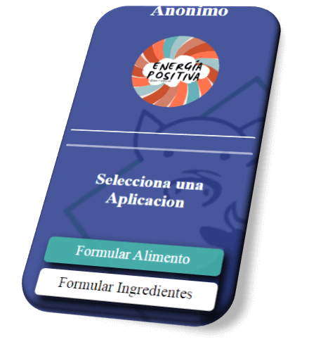
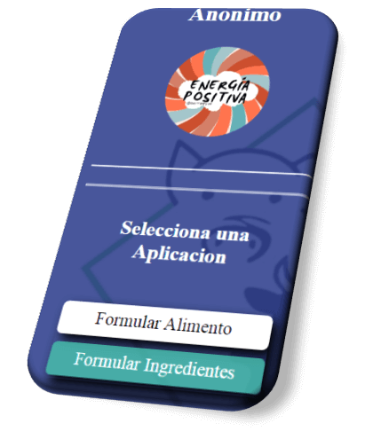

Se creo la aplicacion Formular Alimentos: selecciona los ingredientes que usaras
y su proporcion para predecir el perfil nutritivo del alimento, antes de elaborarlo. Para
mayor informacion, da click en la imagen o ingresa al tutorial desde el menu de navegacion

Se creo la aplicacion Formular Ingredientes: selecciona los ingredientes que usaras
e ingresa el perfil nutritivo esperado del alimento para predecir la proporcion de los ingredientes que mejor
se ajusten a los requerimientos. Para mayor informacion, da click en la imagen o ingresa al tutorial
desde el menu de navegacion